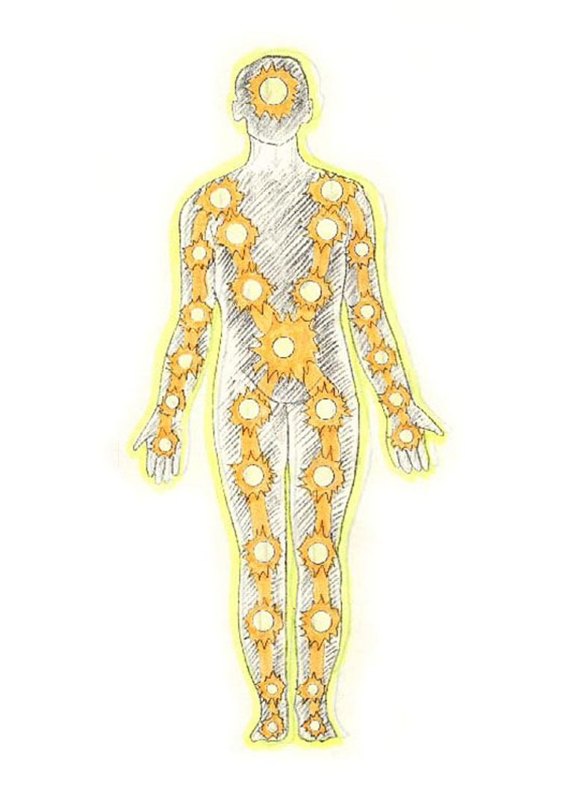
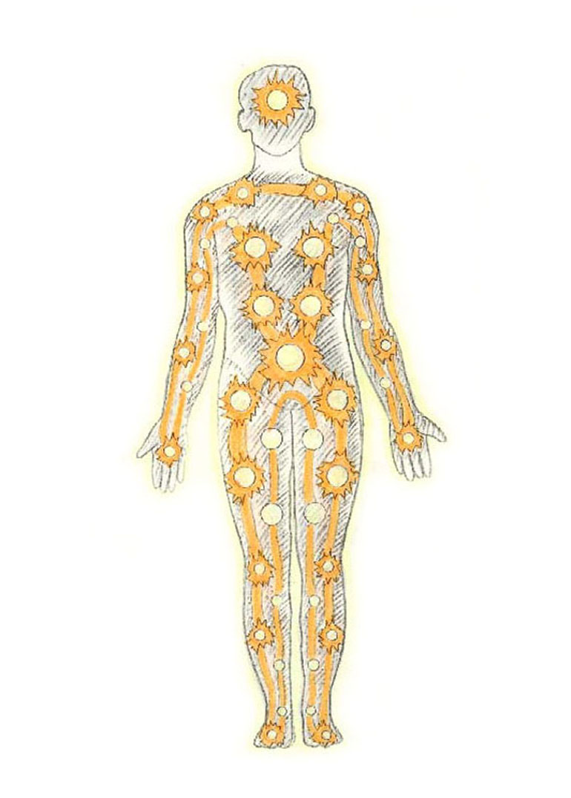

‘대각주천(對角周天)’이란 우주의 생명에너지를 복부를 중심으로 대각의 형상으로 유통시키는 것이 대각주천이다.
대각이라 X형으로서 상대적 각도를 이루는 상태를 말한다. 그러므로 대각주천이란 앞의 기주행공과는 달리 인체의 기를 하단전을 중심으로 대각으로 유통시키는 것을 말한다. 즉, 바른쪽 다리를 유통시켰다면 그것을 왼쪽 팔로 유통시키고, 반대로 왼쪽 다리를 유통시켰다면 그것을 바른쪽 팔로 유통시켜 X자 형을 이루는 것을 말한다.
대각주주천을 하는 이유는 경혈간의 기동성을 강화시켜 주기 위함이다. 지금 까지의 기주는 크게보면 종과 횡의 구조로 되어있다. 그것을 대각방향의 즉, X형 유통을 추가함으로서 연결력을 더욱 강화시켜 준다. 논을 모를 심기위해 써레질 할때는 종(縱)과 횡(橫)방향으로 써리지만, 더욱 정성껏 써릴 때는 대각선으로 써리는 것과 같은 이치라고 보면 된다.
대각주주천을 하는 이유는 경혈간의 기동성을 강화시켜 주기 위함이다. 지금 까지의 기주는 크게보면 종과 횡의 구조로 되어있다. 그것을 대각방향의 즉, X형 유통을 추가함으로서 연결력을 더욱 강화시켜 준다. 논을 모를 심기위해 써레질 할때는 종(縱)과 횡(橫)방향으로 써리지만, 더욱 정성껏 써릴 때는 대각선으로 써리는 것과 같은 이치라고 보면 된다.

일방대각주천
구체적인 방법을 살펴보면, 우선 소주천을 해준 다음 하단전에 기를 정지시킨다. 그것을 왼쪽 환도 바깥쪽으로 유도시킨다. 그런 다음 바깥쪽 발끝을 향하여 유통시킨다. 그리고 발바닥 안쪽으로 끌어올려 하단전 부위에 모은다. 그런 다음 하단전에서 대각 방향인 바른쪽 겨드랑이 위인 어깨 위로 기를 유도한다. 그리고 팔 바깥쪽으로 손끝까지 유통시킨다.
그런 다음 손끝을 거쳐 팔 안쪽으로 유도해서 겨드랑이 위 쪽에 모은 다음, 그것을 왼쪽 겨드랑이 위로 유도시킨다. 그런 다음 바른쪽 팔과는 반대로 팔 안쪽으로 우선 유통시킨다. 그리고 손끝을 지나 바깥쪽으로 끌어올려 어깨 위에 끌어모은다.
일단 어깨 위에 끌어모으면, 복부 부위로 밀어내려 곧바로 오른쪽 다리 안쪽으로 유통시킨다. 그리고 나서 바깥쪽으로 끌어올려 하단전에 도달시킨다. 그런 다음 앞의 경우와는 반대로 바른쪽 다리부터 시작하여, 왼쪽 다리의 경우처럼 똑같이 시행한 다음 하단전에 모아준다.

쌍방대각주천
쌍방대각주천 이란 일방대각주천 과는 달리 동시에 양쪽을 기점으로 대각의 방향으로 기를 유통시키는 방법이다. 기를 동시에 두 방향으로 유통시키는 것은 의상점(意想點)을 두 개로 하는 것이다.
동시에 두 방향으로 기를 유통시킨다면, 굉장히 어려운 방법으로 알 것이다. 그러나 실제로는 그렇지가 않다. 왜냐하면, 의상점을 둘로 두기만 하면 되기 때문이다. 실제로 하나나 둘은 큰 차이가 없다. 양쪽은 균형적이기 때문에, 균형 의식만 분명하면 된다. 오히려 대각주천일 경우는 균형을 이루는 쌍방대각주천이 더욱 쉽다.
방법을 살펴볼 때, 소주천을 해주고 하단전에서 양쪽 환도 바깥쪽으로 유도시킨다. 그런 왼쪽 오른쪽 동시에 바깥 쪽 발끝을 향하여 유통시킨다. 그리고 발바닥 안쪽으로 끌어올려 하단전 부위에 모은다. 그런 다음 하단전에서 동시에 대각 방향인 바른쪽과 왼쪽 겨드랑이 위인 어깨 위로 기를 유도한다. 그리고 팔 바깥쪽으로 손끝까지 유통시킨다.
그런 다음 손끝을 거쳐 팔 안쪽으로 유도해서 겨드랑이 위 쪽에 모은 다음, 서로 반대편 겨드랑이 위로 교차하면서 유도한 다음, 팔 안쪽을 유통시킨다. 그리고 손끝을 지나 바깥쪽으로 끌어올려 어깨 위에 끌어모은다.
이렇게 양쪽 어깨 위에 끌어 모은 기를 복부 부위로 밀어내려 서로 교차하면서 곧바로 양쪽 다리 안쪽으로 유통시킨다. 그리고 나서 바깥쪽으로 끌어올려 하단전에 도달시킨다.